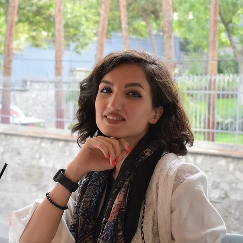

Led M.Sc. thesis research on neonatal perisylvian development with graph analysis of structural covariance networks from infant MRI, using NetworkX and related neuroinformatics tools. Developed and evaluated ML/DL methods for medical image analysis; collaborated across imaging, neuroinformatics, and machine learning; contributed to manuscript preparation; assisted in supervising undergraduate students.
Biomedical Engineering · Clinical AI
Shirin Rajabpour
Turning brain signals into insight
I build careful AI and imaging pipelines for medical research — from infant MRI brain mapping to EEG analysis.

About
Curious mind. Careful science.
Welcome — I’m Shirin, a biomedical engineer with an M.Sc. in Biomedical Engineering (Bioelectric) from K. N. Toosi University of Technology. I’m passionate about where biomedical research meets computer science, and about tools that can meaningfully improve healthcare.
My thesis modeled neonatal development of perisylvian regions using graph analysis of structural covariance networks from infant structural MRI (ages 0–24 months), exploring patterns of healthy early brain development.
- Deep learning for medical imaging & clinical AI
- Neuroimaging & developmental brain mapping
- Graph analysis of structural brain connectivity
- EEG/MEG analysis & source modeling
- Pattern recognition & ML for healthcare data
Resume
Education, research, and teaching
Education
M.Sc. Biomedical Engineering – Bioelectric
K. N. Toosi University of Technology · Oct 2020 – Sep 2024 · GPA 17.75/20
Thesis: Modeling Neonatal Development of Perisylvian Regions Using Graph Analysis of Structural Covariance Networks
Supervisor: Dr. Hamid Abrishami Moghaddam
B.Sc. Electrical Engineering – Electronics
Yazd University · Sep 2015 – Sep 2019 · Final-year GPA 16.37/20
Thesis: Robust nonlinear control schemes for finite-time tracking of a 5-DOF robotic exoskeleton
Supervisor: Dr. Ali Abooee
Honors & more
- Best Seminar Award in Medical Engineering, K. N. Toosi (Oct 2023)
- Top 2% of ~14,000 candidates — national M.Sc. entrance exam (2020)
- Top 2% of ~182,000 candidates — national B.Sc. entrance exam (2015)
- AI-DAY Committee Member (2022–2023)
- IEEE Educational Activities Committee Member (2020–2023)
- English: Fluent (TOEFL iBT 100/120) · Persian: Native
Research experience
Teaching experience
Assisted with homework, organized lecture notes, graded assignments, held student meetings, and designed exam questions.
Graded homework assignments for the graduate course.
Graded examination papers for the undergraduate course.
Publications
“Modeling the Neonatal Development of Perisylvian Regions Using Graph Analysis of Structural Covariance Networks.”
“Tumor Mask and Masked CT Fusion for 3D CNN Classification of Kidney Tumors.”
Technical skills
PythonMATLABPyTorchTensorFlow
OpenCVNetworkXBrainstormscikit-learn
SQLGitLinuxLaTeX
Also: Keras, EEGLAB, GRETNA, GraphVar, Power BI, NumPy, Pandas, C++, C#, Verilog, Proteus, PSpice
Projects
Work I’m proud of
Infant Brain Development Analysis
Graph-analysis framework for structural covariance networks in early brain maturation across 200+ infant MRI scans; applied ML methods to neuroimaging-based developmental analysis.
Tumor Mask & Masked-CT Fusion for 3D CNN
3D CNN classification of kidney tumors using tumor-mask and masked-CT fusion.
EEG / MEG Source Analysis
Analyzed electrophysiology data in Brainstorm for source localization; implemented and evaluated forward and inverse EEG/MEG methods.
EEG Signal Classification
Entropy-based feature extraction in the EMD–DWT domain for focal versus non-focal EEG discrimination on 10,000+ segments.
Breast Cancer Prediction Models
SVM ensembles and Bayes MLE on the Wisconsin dataset; neural network models for breast cancer detection (Pattern Recognition, Dr. H. A. Moghaddam; Neural Networks, Dr. M. Teshnehlab).
Earlier coursework projects
- Temperature prediction using RBF networks — Neural Networks, Dr. Mohammad Teshnehlab (Fall 2021)
- Lighting exposure improvement — Digital Image Processing, Dr. H. A. Moghaddam (Summer 2021)
- Design & simulation of a non-coherent receiver — Telecommunication Circuits, Yazd University (Summer 2019)
- Vending machine (FPGA) — Yazd University (Summer 2018)
- C# dentistry insurance application · Snake & Color Ballz games — Yazd University (Winter 2017)
Contact
Looking forward to hearing from you
Open to research collaborations and roles in medical imaging, neuroimaging, and clinical AI.